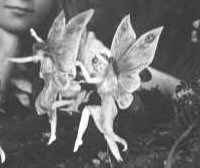

Thursday, October the 28th, 2004
back to: title, date or indexes
Did you know that in the world of faeries there is a specific type of sprite which dwells within jiffy bags of Tex-Mex origin? These mischievous sprites are reluctant to leave the snug lining of their bags, except to flit from one to another when they become oh so lonesome and feel compelled to procreate. If you creep ever so silently into a postal sorting office in El Paso at dead of night, you might be lucky enough to see a flickering sprite leaping between jiffy bags. If it sees you, it will be vexed, and cast a spell on you, and for twenty-six days and nights you will be tormented by visions of potato-headed monsters spewing ectoplasm in every direction. But if the sprite does not see you, you will have good luck for a twelvemonth, possibly involving the unexpected offer of an appearance in a radio advertisement for a thrilling new detergent or bleach product. That, at any rate, is what I was told by the Weird Woman of Woohooweedywood, and she has yet to be proved wrong in any of her pronouncements or incantations, except for the one about the badger in the hedge.

These are not Tex-Mex Jiffy Bag Sprites. They are Cottingley Fairies.
Hooting Yard on the Air, November the 3rd, 2004 : “Tex-mex Jiffy Bag Sprites” (starts around 00:15)
Hooting Yard on the Air, November the 29th, 2006 : “Shrivelled” (starts around 27:38)